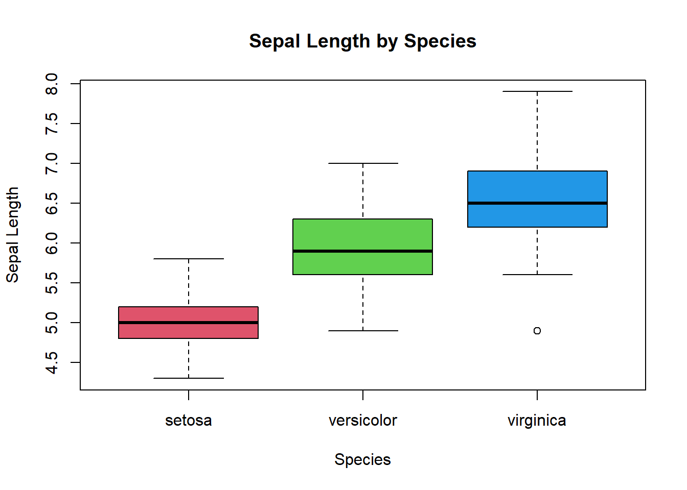
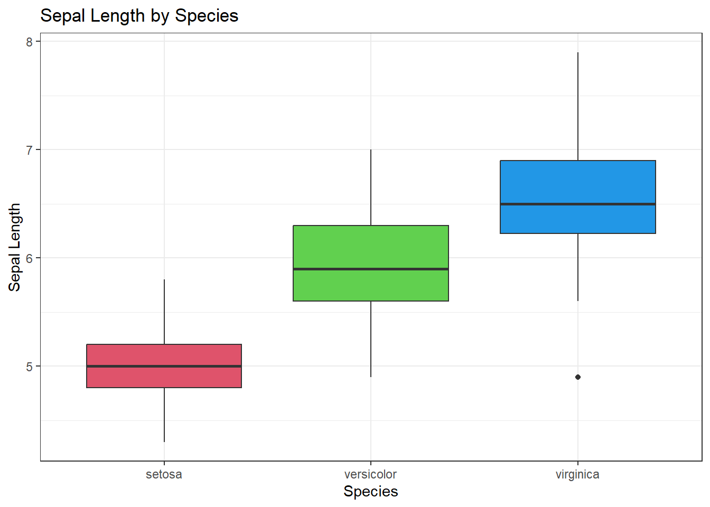
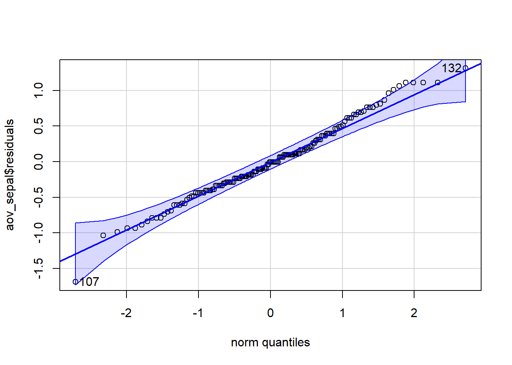
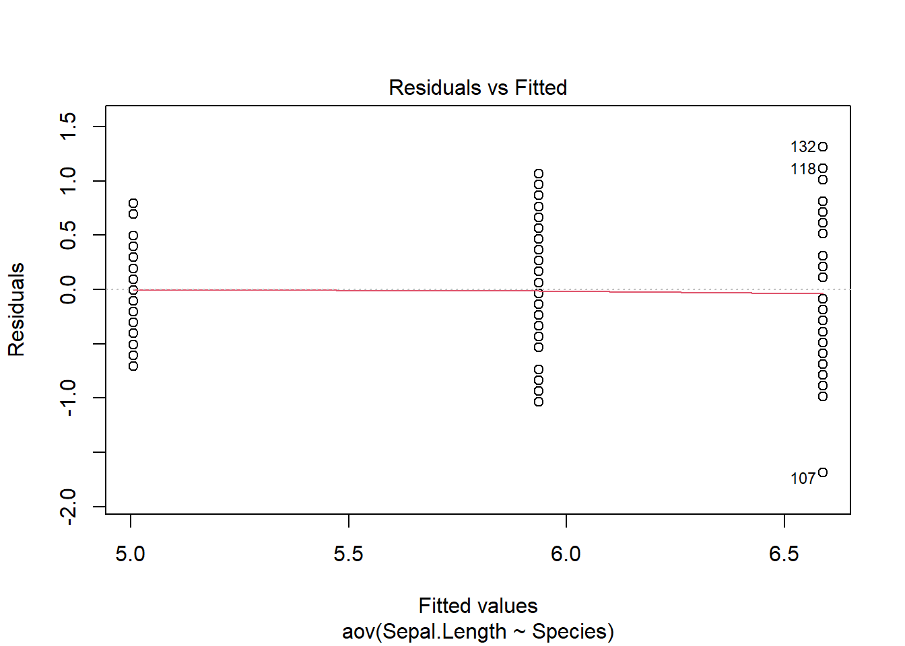

table(iris$Species)
setosa versicolor virginica
50 50 50 The proper analysis for situations with a quantitative response variable and a categorical explanatory variable with 3 or more levels/categories is called Analysis of Variance. This has the unfortunate acronym, ANOVA.
Recall that the generic null hypothesis is that there is NO RELATIONSHIP between \(x\) and \(y\). For a categorical explanatory variable and a quantitative response variable, this means that there would be no differences between the group means for each category.
The null and alternative hypotheses are always the same for an ANOVA:
\[H_o: \mu_1 = \mu_2 = ...\mu_k\] where k is the number of groups in the data.
\[H_a: \text{at least one } \mu_k \text{ is different}\] ## Visualizing Ho
Even if the null hypothesis is true, there will be sample-to-sample variation. Below is a simulation that looks at different boxplots that are all from the same population.
Play around and see the impact of sample size (within each group) and the expected variability between groups, even when Ho is true:
The Test Statistic for testing the relationship between a quantitative response variable and a categorical explanatory variable with >2 categories is called \(F\).
The formula for \(F\) is complicated. But we can consider the signal-to-noise ratio as follows:
SIGNAL: The variation between the means, ie. how far apart the group means are spread out.
NOISE: The variation within groups. This variation represents the natural variation inherent in the data independent of any differences between the means.
\[ F=\frac{\text{Between-group Variation}}{\text{Within-group Variation}}\]
Let’s look at an example to illustrate.
Imagine you’re comparing 4 pesticide seed treatments for corn seeds. These treatments are all supposed to improve emergence uniformity and crop yield.
The null hypothesis is that seed treatment has no effect on crop yield. This is typically expressed as a statistical hypothesis by stating that the average emergence is the same regardless of which treatment you use.
We would express this as:
\[H_0: \mu_1 = \mu_2 = \mu_3 = \mu_4\] PONDER: Can you see the connection between the treatment means being the same and “no relation” between treatment and emergence uniformity?
The alternative hypothesis for an \(F\)-statistics is:
\[H_a: \text{at least one } \mu_k \text{ is different}\]
Note: The \(F\)-test does not tell us which group is different or how many are different from each other. The \(F\)-test only tells us that at least one mean is different.
A good experiment would run multiple experimental trials on different farms. Ideally, we’d want a good random sample of farms in the area we expect to be planting.
If the null hypothesis were true, any differences observed between the treatment means should be due to random variation or “noise” inherent in growing corn. The within-treatment variation is a good estimate of the “noise” because it reflects the natural variability in seed yields when the null hypothesis is true.
If the null hypothesis is false, we would expect the treatment means to be much more spread out relative to the within-treatment variation.
The test statistic is the ratio of the variation between groups and the average variation within groups. The further spread out the sample means are relative to the noise within the groups, the more evidence we have against \(H_0\).
A large F-statistics means the group averages are much more spread out than the natural variability in crop emergence.
We can get a sense the signal and noise visually.

The shape of the probability distribution of the F-statistic changes shape depending on how much data we have AND how many groups we have. These parameters in the \(F\)-distribution are called Degrees of Freedom, and the F-distribution has 2 sets.
The numerator (signal), or between groups degrees of freedom is \(df_{between}=k-1\), where k is the number of groups you are comparing.
The denominator, or within groups degrees of freedom is \(df_{within}=n-k\) where n is the total number of data points and k is the number of groups.
We will get the values of both degrees of freedom directly from the R output.
Unlike the standard normal distribution, the \(F\)-distribution is not centered around zero and can never be negative because \(F\) is the ratio of 2 positive numbers and is, therefore, always positive.
To summarize:

The P-value for an F-statistic is always one-tailed. The probability of observing a test statistic, \(F\), if the null hypothesis is true can be visualized:

In practice, the computer calculates the test statistic, P-value, and degrees of freedom and we interpret the output as with other statistical tests.
The P-value is the probability of observing an \(F\)-statistic higher than the one we observed if the null hypothesis were true.
For a cutoff a given \(\alpha\):
Just as with other statistical tests we’ve done so far, the \(F\)-test has certain requirements we must check to validate our P-values. Because of the way we calculate F, we are less concerned with the normality of the individual groups as we are with the variation within the groups.
What to check:
To check the first requirement we can compare the biggest standard deviation to the smallest. If the ratio of the biggest to the smallest is less than 2, we conclude that the population standard deviations are “equal”.
NOTE: Intuitively, this means that if the biggest standard deviation is more than twice as big as the smallest, then we might have cause for concern.
This can be checked using the standard deviations from the favstats() output (see Analysis in R below)
Residuals are defined as the difference between an observation and it’s “expected” value:
\[residual = \text{observed}-\text{expected}\]
In the case of ANOVA, the expected value is simply the group average. We get the residual for each observation by taking the observed value and subtracting its group mean. Once again, R will provide this for us.
For our analysis to be valid, we need to see if the residuals are normally distributed. We can do a qqPlot() of the residuals to assess this requirement.
If both requirements are met, the P-value is sound.
To perform an ANOVA, we use the aov() function with the familiar formula data$response ~ data$explanatory.
The aov() function by itself isn’t very useful on its own. We can use the summary() function to give us all the output we need to perform a hypothesis test.
We typically name our output using the assignment operator <- to make it easier to get the information we would like.
The inside of aov() will look familiar, using the same ~ notation we’ve used all semester.
The generic process for performing an ANOVA is:
# Name the ANOVA output:
aov_output <- aov(data$response_variable ~ data$categorical_variable)
# Summarise the ANOVA output to get test statistics, DF, P-value, etc:
summary(aov_output)
Just as with the other statistical tests, ANOVA has certain requirements for us to be able to trust the P-value.
We can use favstats() to extract the standard deviations of each group, then find the ratio of the max/min to see if it is less than 2.
# extract only the standard deviations from favstats output using th `$`:
sds <- favstats(data$response_variable ~ data$categorical_variable)$sd
# Compare the max/min to 2
max(sds) / min(sds)
# if max/min < 2, then we're ok
This gives us a valuable rule by which to decide if there is a violation of the constant variance requirement for the F-test.
We can visualize this just as we did with the regression analysis by plotting the residuals against their predicted values.
plot(aov_output, which = 1)In an ANOVA, the predicted value is the group mean. Because every observation in the group has the same predicted value, the residuals line up on vertical lines according to their group average. We can visually assess if one of the groups looks like there is much smaller variability than the others.
We can assess normality of the residuals with a qqPlot(). We first need to extract the residuals from our output:
# Name the output of the aov() function `output`:
aov_output <- aov(data$response_variable ~ data$categorical_variable)
# do a qqPlot of the residuals (observation values - group mean) that R calculates. We can use th `$` to tell R what part of the output we want to make into a qqPlot():
qqPlot(aov_output$residuals)
If most of the points fall within the blue zone, we can be confident that the residuals are normally distributed.
If the overall \(F\)-test is statistically significant (\(P\)-value < \(\alpha\)) then we can use what is called Tukey’s Honest Significant Difference to look at pairwise comparisons between the groups. We use the TukeyHSD() function by including the aov() model output:
TukeyHSD(aov_output)
CAUTION: Only use TukeyHSD() when the overall \(F\)-test is statistically significant.
We can easily plot the confidence
For this demonstration we will be exploring the iris data. This dataset is built in to base R libraries, so we can access it without reading it in using “import”.
The iris data contains multiple measures on flowers that might be of interest to compare across species.
Let’s first compare sepal lengths between species.
How many species do we have in our dataset?
table(iris$Species)
setosa versicolor virginica
50 50 50 Create a side-by-side boxplot of species and Sepal Length.
boxplot(Sepal.Length ~ Species, data=iris, col = c(2,3,4), ylab="Sepal Length", main = "Sepal Length by Species")
Using GGPlot:
ggplot(iris, aes(x=Species, y = Sepal.Length)) +
geom_boxplot(fill=c(2,3,4)) +
theme_bw() +
labs(
y = "Sepal Length",
title = "Sepal Length by Species"
)
aov_sepal <- aov(Sepal.Length ~ Species, data=iris)
summary(aov_sepal) Df Sum Sq Mean Sq F value Pr(>F)
Species 2 63.21 31.606 119.3 <2e-16 ***
Residuals 147 38.96 0.265
---
Signif. codes: 0 '***' 0.001 '**' 0.01 '*' 0.05 '.' 0.1 ' ' 1Before we make a conclusion, we want to check that we can trust our output. Every statistical test has requirements that must be satisfied if we are to trust our conclusions. For ANOVA, we need to check the normality and that the variation within groups is roughly the same.
We use a QQ-plot to check for normality and the ratio of the largest to the smallest standard deviation to check “equal” variation.
# QQ plots show how closely the the residuals are to a normal distribution
qqPlot(aov_sepal$residuals)
[1] 107 132# Check that there is less than a 2X difference between the largest and smallest standard deviations
# We can assign favstats()$sd to a variable to make it easier to use. Recall the "$" can also be used to extract specific output from functions
sds <- favstats(Sepal.Length ~ Species, data=iris)$sd
max(sds) / min(sds)[1] 1.803967plot(aov_sepal, which=1)
Question: What is the F-statistics?
Answer: 119.3
Question: What are the between-groups degrees of freedom?
Answer: 2
Question: What are the within-groups degrees of freedom?
Answer: 147
Question: What is the P-value?
Answer: <2e-16
Question: What is your conclusion?
Answer: Because p is less than alpha, we reject the null hypothesis. We conclude that at least one of the means of Sepal Length is different from the other group means.
In the event that the overall test statistics is significant, we can look deeper into the pair-wise differences using the TukeyHSD() function as follows:
TukeyHSD(aov_sepal) Tukey multiple comparisons of means
95% family-wise confidence level
Fit: aov(formula = Sepal.Length ~ Species, data = iris)
$Species
diff lwr upr p adj
versicolor-setosa 0.930 0.6862273 1.1737727 0
virginica-setosa 1.582 1.3382273 1.8257727 0
virginica-versicolor 0.652 0.4082273 0.8957727 0The output gives us confidence intervals and P-values for each of the pairwise differences between the means.
Let’s go through the same steps but compare Petal Length.
Make a side-by-side boxplot of Petal Length for each species.
State your null and alternative hypotheses:
Perform an ANOVA:
#aov_petal <- aov()
#summary(aov_petal)Question: What is the F-statistics?
Answer:
Question: What are the between-groups degrees of freedom?
Answer:
Question: What are the within-groups degrees of freedom?
Answer:
Question: What is the P-value?
Answer:
Check ANOVA requirements (max_sd/min_sd < 2, normal residuals)
Question: What is your conclusion for the hypothesis test?
Answer:
QUESTION: Which group means are significantly different from each other?
ANSWER: